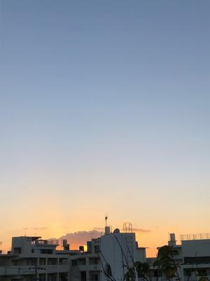
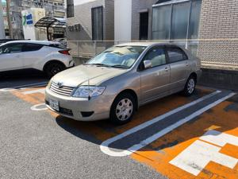
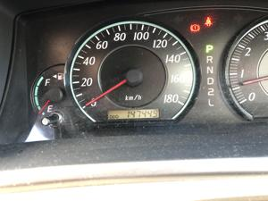
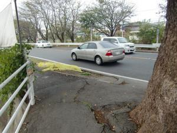

うるがいの話 ある日
最新: カローラとの別れ【うるがいの話 ある日】とは 一日だけのプログです
『うるがいの話』の最新一日だけのプログで、通信料が少なく経済的だ。カニの画像をクリックすると全ての日付が載る『うるがいの話』サイトを表示します
|
|
【うるがいの話】 うるがい(ｳﾙｶﾞｲ urugai)とは、『もずくがに』の名前でとても大きくなります。 |
|---|---|
|
|
【カミマヤーの話】 猫のことを方言でマヤーといいます。カミマヤーとは、神の猫のことです。 |
|
【タナガーの話】 たながー（ﾀﾅｶﾞｰtanagaa）とは手長えびのことで、何種類かあり大きいのは車 エビぐらいになります。 |

|
【ぶながぁの話】 ぶながー(bunagaa)とは、赤い髪の毛、赤い身体、そして身長は１ｍ２０ｃｍ ぐらい、川の蟹を食べているの目撃された。場所は沖縄県国頭郡大宜味村のと ある村僕の隣近所に住んでいる爺さんから、聞いた話です。 |
|
|
【ギーマの話】 ギーマ(giima)とは、山原の里山に咲くスズランに似た、 花を付けます。実は食べられます、 気が付くと口の周りが紫になっています。 |
2021年12月11日 (土）カローラとの別れ
18:21
   
１７年お世話になったカローラを譲渡した。走行距離１４万キロ、あっちこっ
ち汚くなっていた。昨日、洗車したが車のコーティングが剥がれているのであ
まり綺麗にはならなかった。ギヤチェンジのハンドルのゴムが剥がれてきたの
には驚いた。明日が、車検の日だったが。そのあと販売店で紹介してもらった
レンタカーで軽自動車を借りに行く、車をみるとサイドブレーキでない！、ん
！、まずい、あれほどフットブレーキはダメと販売店の営業にはお願いしてい
たのに。レンタカーの店員に、ハンドブレーキをお願いしていると聞いていま
せんかと言うと、『いいえ』、オヨ、ハンドブレーキはないですか、『一台だ
けありますが』、ええ、それでいいです、お願いします。何とか、サイドブレ
ーキの車を確保できた。それにしても、あれほどお願いしていたのに。この営
業さんは来年の一月に別の営業店へ移動することになり、今日、新しい若い営
業の人を日引継ぎ兼ねて紹介してもらった。家に帰るなり、新しい担当者に電
話をする。カローラにあったスペアタイアのキープと、レンタカー２か月を超
えた場合は、販売店から負担で代車を手配すること！、をハンドブレーキの手
配のゴタゴタした背景から貴方にお願いしています（前任者へは話さなくて結
構です）と。
１８時１８分 ビットコインの総資産 ￥１５，８７５